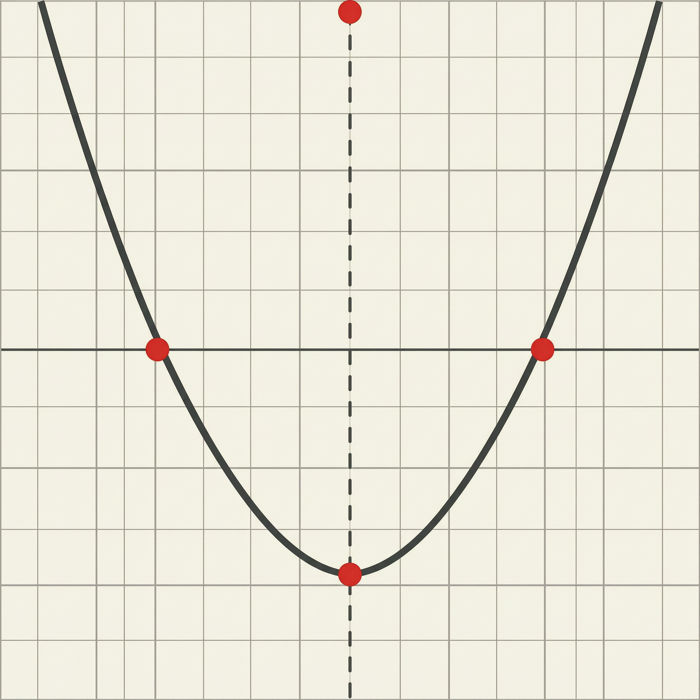
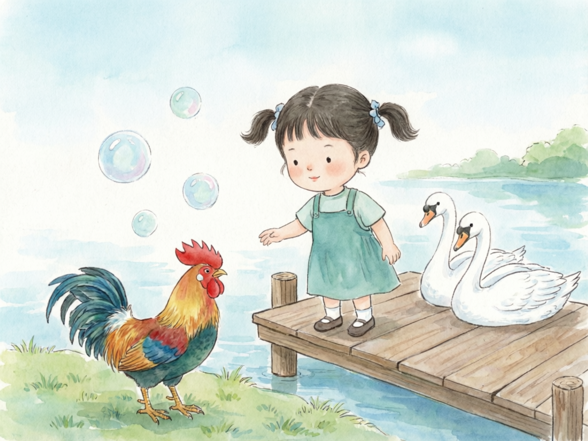

1. Structure First
Use the model to create composition, scene, diagrams, empty label areas, and blank speech bubbles.
A growing gallery of Alibaba Cloud image generation experiments across education, advertising, marketing, and ecommerce workflows.


Designed as an expandable showcase. Add a new industry to the data file and it will appear in the filters.
Filter by industry, model, and subject. Each card keeps the original prompt for review and reuse.
No cases match the current filters.
The site separates visual generation from publishing accuracy, especially for STEM labels and multilingual text.
Use the model to create composition, scene, diagrams, empty label areas, and blank speech bubbles.
Add formulas, coordinates, labels, and multilingual dialogue in a controlled design tool or code layer.
Keep each new field as a collection in the same CSV: healthcare, finance, retail, manufacturing, games, or marketing.